-
Deposit
13:56:28 PM / 31:59:149 Fail
Deposit
02.12.2025 13:56:28 02.12.2025 13:58:27 31:59:149 · #test-id=2FailDeposit partial withdrawalWhen close all the other opened windowsWhen User opens the T24 Url Then User should be able to login to T24
Then User should be able to login to T24


 Then The user should be able to fill the commandlineAnd navigate to find deposit option for partial wthdrawalThen open the depositAnd click on Partial withdrawalThen Enter the partial withdrawal amountThen Click on validateAnd Click on commitThen click on accept override
Then The user should be able to fill the commandlineAnd navigate to find deposit option for partial wthdrawalThen open the depositAnd click on Partial withdrawalThen Enter the partial withdrawal amountThen Click on validateAnd Click on commitThen click on accept override Then Verify whether the transaction complete message is displayed
Then Verify whether the transaction complete message is displayed And verify simulation status becomes Completed - Successfullycom.frameium.stepdef.Hooks.afterEveryStep(io.cucumber.java.Scenario)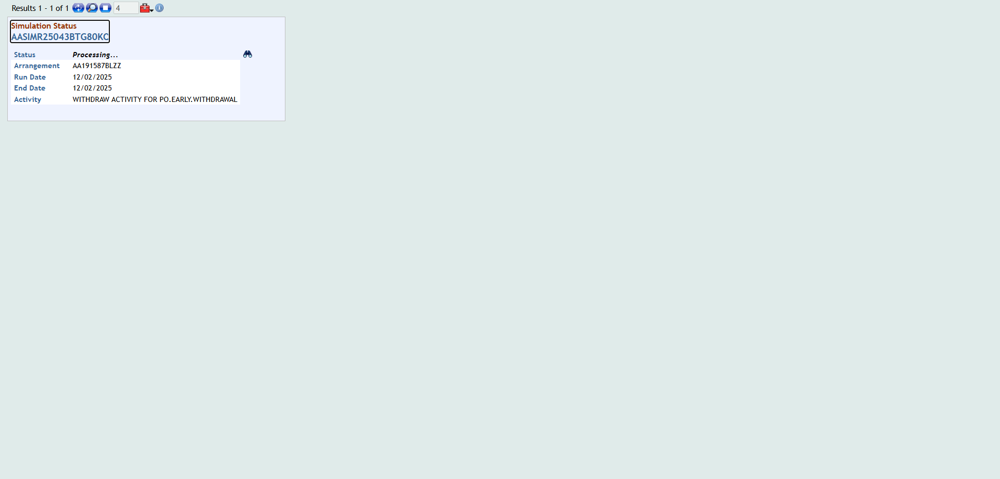Then switch back to main windowStep skippedThen The user should be able to fill the commandlineStep skippedAnd navigate to find deposit option for partial wthdrawalStep skippedThen open the depositStep skippedAnd Click on the withdrawal statementStep skippedThen Proceed to partial withdrawalStep skippedThen Click on validateStep skippedAnd Click on commitStep skippedThen click on accept overrideStep skippedThen Verify whether the transaction complete message is displayedStep skippedThen switch back to main windowStep skippedThen The user should be able to fill the commandlineStep skippedAnd The user should be able to click on general enquiries buttomStep skippedAnd click on the IB-view of account entriesStep skippedThen Enter the account number of deposit in the IB view of account entriesStep skippedAnd Enter the date in ibview formatStep skippedAnd click on find buttonStep skippedThen Check the narratives of Partial WithdrawalStep skipped
And verify simulation status becomes Completed - Successfullycom.frameium.stepdef.Hooks.afterEveryStep(io.cucumber.java.Scenario)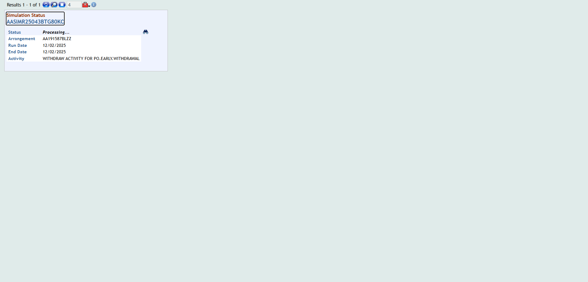Then switch back to main windowStep skippedThen The user should be able to fill the commandlineStep skippedAnd navigate to find deposit option for partial wthdrawalStep skippedThen open the depositStep skippedAnd Click on the withdrawal statementStep skippedThen Proceed to partial withdrawalStep skippedThen Click on validateStep skippedAnd Click on commitStep skippedThen click on accept overrideStep skippedThen Verify whether the transaction complete message is displayedStep skippedThen switch back to main windowStep skippedThen The user should be able to fill the commandlineStep skippedAnd The user should be able to click on general enquiries buttomStep skippedAnd click on the IB-view of account entriesStep skippedThen Enter the account number of deposit in the IB view of account entriesStep skippedAnd Enter the date in ibview formatStep skippedAnd click on find buttonStep skippedThen Check the narratives of Partial WithdrawalStep skipped -
Lending operations
13:58:36 PM / 36:17:905 Fail
Lending operations
02.12.2025 13:58:36 02.12.2025 14:04:54 36:17:905 · #test-id=166FailLoan CreationWhen close all the other opened windowsWhen User opens the T24 Url Then User should be able to login to T24
Then User should be able to login to T24

 Then The user should be able to fill the commandlineAnd Navigate to Product catalogThen click on commercial loan New ArrangementAnd fill the customer number in customer fieldThen Click on validateAnd Provide the loan interest detailsThen enter the commitment amount and termAnd Select the account mandate recordThen Click on validate after entering loan detailsAnd Click on commitThen Verify whether the transaction complete message is displayed
Then The user should be able to fill the commandlineAnd Navigate to Product catalogThen click on commercial loan New ArrangementAnd fill the customer number in customer fieldThen Click on validateAnd Provide the loan interest detailsThen enter the commitment amount and termAnd Select the account mandate recordThen Click on validate after entering loan detailsAnd Click on commitThen Verify whether the transaction complete message is displayed And switch back to main windowAnd The User clicks on signoffWhen close all the other opened windowsThen Login to authoriser accountThen The user should be able to fill the commandlinecom.frameium.stepdef.Hooks.afterEveryStep(io.cucumber.java.Scenario)
And switch back to main windowAnd The User clicks on signoffWhen close all the other opened windowsThen Login to authoriser accountThen The user should be able to fill the commandlinecom.frameium.stepdef.Hooks.afterEveryStep(io.cucumber.java.Scenario) And user should be able to navigate to find unauthorised loanStep skippedThen open the newly created loanStep skippedAnd authorise the loanStep skippedThen Verify whether the transaction complete message is displayedStep skippedAnd switch back to main windowStep skippedAnd The User clicks on signoffStep skippedThen User should be able to login to T24Step skippedThen The user should be able to fill the commandlineStep skippedAnd user should be able to navigate to find loanStep skippedThen open the newly created loanStep skippedThen verify the newly created loanStep skippedThen switch back to main windowStep skippedWhen close all the other opened windowsStep skippedThen The user should be able to fill the commandlineStep skippedAnd user should be able to navigate to find loanStep skippedThen open the Newly created loanStep skippedAnd Click on desbursementStep skippedThen Enter the desbursement details for loanStep skippedThen Click on validateStep skippedAnd Click on commitStep skippedThen click on accept overrideStep skippedThen Verify whether the transaction complete message is displayedStep skippedThen switch back to main windowStep skippedWhen close all the other opened windowsStep skippedAnd The User clicks on signoffStep skippedThen Login to authoriser accountStep skippedThen The user should be able to fill the commandlineStep skippedAnd user should be able to navigate to find loanStep skippedThen open the Newly created loanStep skippedAnd Authorise the desbusement for the loanStep skippedThen switch back to main windowStep skippedThen The user should be able to fill the commandlineStep skippedAnd user should be able to navigate to find loanStep skippedThen open the Newly created loanStep skippedThen Verify whether the status of the loan is currentStep skippedFailLoan ClosureWhen close all the other opened windowsWhen close all the other opened windowsWhen User opens the T24 Url
And user should be able to navigate to find unauthorised loanStep skippedThen open the newly created loanStep skippedAnd authorise the loanStep skippedThen Verify whether the transaction complete message is displayedStep skippedAnd switch back to main windowStep skippedAnd The User clicks on signoffStep skippedThen User should be able to login to T24Step skippedThen The user should be able to fill the commandlineStep skippedAnd user should be able to navigate to find loanStep skippedThen open the newly created loanStep skippedThen verify the newly created loanStep skippedThen switch back to main windowStep skippedWhen close all the other opened windowsStep skippedThen The user should be able to fill the commandlineStep skippedAnd user should be able to navigate to find loanStep skippedThen open the Newly created loanStep skippedAnd Click on desbursementStep skippedThen Enter the desbursement details for loanStep skippedThen Click on validateStep skippedAnd Click on commitStep skippedThen click on accept overrideStep skippedThen Verify whether the transaction complete message is displayedStep skippedThen switch back to main windowStep skippedWhen close all the other opened windowsStep skippedAnd The User clicks on signoffStep skippedThen Login to authoriser accountStep skippedThen The user should be able to fill the commandlineStep skippedAnd user should be able to navigate to find loanStep skippedThen open the Newly created loanStep skippedAnd Authorise the desbusement for the loanStep skippedThen switch back to main windowStep skippedThen The user should be able to fill the commandlineStep skippedAnd user should be able to navigate to find loanStep skippedThen open the Newly created loanStep skippedThen Verify whether the status of the loan is currentStep skippedFailLoan ClosureWhen close all the other opened windowsWhen close all the other opened windowsWhen User opens the T24 Url Then User should be able to login to T24
Then User should be able to login to T24

 Then The user should be able to fill the commandlineAnd user should be able to navigate to find loancom.frameium.stepdef.Hooks.afterEveryStep(io.cucumber.java.Scenario)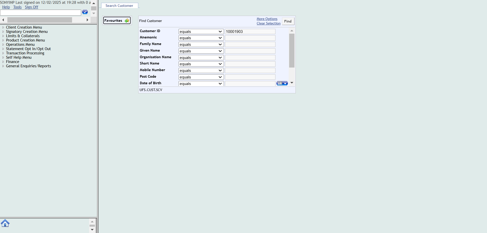Then open the loan that need to be closedStep skippedAnd Click on request payoffStep skippedThen from the newly opened window select the reason for loan closureStep skippedThen Click on validateStep skippedAnd Click on commitStep skippedThen click on accept overrideStep skippedAnd verify simulation status becomes Executed - SuccessfullyStep skippedThen switch back to main windowStep skippedWhen close all the other opened windowsStep skippedThen The user should be able to fill the commandlineStep skippedAnd user should be able to navigate to find loanStep skippedThen open the loan that need to be closedStep skippedThen click on the payoff statement from overfiew screen of loanStep skippedThen switch back to main windowStep skippedThen The user should be able to fill the commandlineStep skippedAnd user should be able to navigate to find loanStep skippedThen open the loan that need to be closedStep skippedAnd click on loan payoffStep skippedThen Enter the loan payoff detailsStep skippedThen Click on validateStep skippedAnd Click on commitStep skippedThen click on accept overrideStep skippedThen Verify whether the transaction complete message is displayedStep skippedThen switch back to main windowStep skippedAnd The User clicks on signoffStep skippedWhen close all the other opened windowsStep skippedThen Login to authoriser accountStep skippedThen The user should be able to fill the commandlineStep skippedAnd user should be able to navigate to find loanStep skippedThen open the loan that need to be closedStep skippedThen authorise loanpayoffStep skippedThen switch back to main windowStep skippedThen The user should be able to fill the commandlineStep skippedAnd user should be able to navigate to find loanStep skippedThen open the loan that need to be closedStep skippedAnd verify whether the loan status is moved to pending closureStep skipped
Then The user should be able to fill the commandlineAnd user should be able to navigate to find loancom.frameium.stepdef.Hooks.afterEveryStep(io.cucumber.java.Scenario)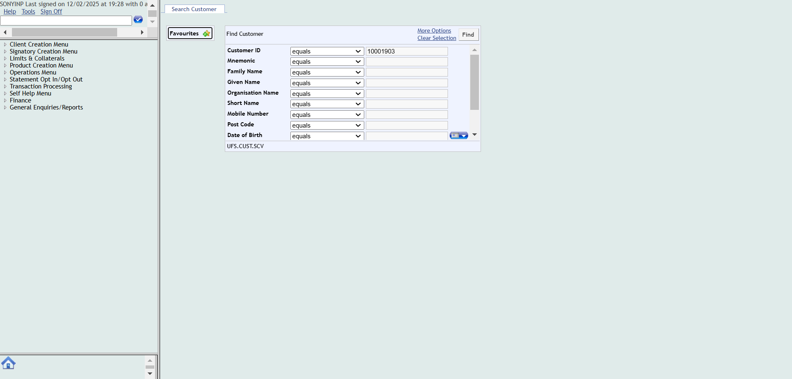Then open the loan that need to be closedStep skippedAnd Click on request payoffStep skippedThen from the newly opened window select the reason for loan closureStep skippedThen Click on validateStep skippedAnd Click on commitStep skippedThen click on accept overrideStep skippedAnd verify simulation status becomes Executed - SuccessfullyStep skippedThen switch back to main windowStep skippedWhen close all the other opened windowsStep skippedThen The user should be able to fill the commandlineStep skippedAnd user should be able to navigate to find loanStep skippedThen open the loan that need to be closedStep skippedThen click on the payoff statement from overfiew screen of loanStep skippedThen switch back to main windowStep skippedThen The user should be able to fill the commandlineStep skippedAnd user should be able to navigate to find loanStep skippedThen open the loan that need to be closedStep skippedAnd click on loan payoffStep skippedThen Enter the loan payoff detailsStep skippedThen Click on validateStep skippedAnd Click on commitStep skippedThen click on accept overrideStep skippedThen Verify whether the transaction complete message is displayedStep skippedThen switch back to main windowStep skippedAnd The User clicks on signoffStep skippedWhen close all the other opened windowsStep skippedThen Login to authoriser accountStep skippedThen The user should be able to fill the commandlineStep skippedAnd user should be able to navigate to find loanStep skippedThen open the loan that need to be closedStep skippedThen authorise loanpayoffStep skippedThen switch back to main windowStep skippedThen The user should be able to fill the commandlineStep skippedAnd user should be able to navigate to find loanStep skippedThen open the loan that need to be closedStep skippedAnd verify whether the loan status is moved to pending closureStep skipped -
Payment
14:05:05 PM / 51:15:311 Fail
Payment
02.12.2025 14:05:05 02.12.2025 14:26:20 51:15:311 · #test-id=663FailInternal transferWhen close all the other opened windowsWhen User opens the T24 Url Then User should be able to login to T24
Then User should be able to login to T24

 Then The user should be able to fill the commandlineAnd user should be able to see the the balance of the account before performing internal transfer
Then The user should be able to fill the commandlineAnd user should be able to see the the balance of the account before performing internal transfer Then The user should be able to navigate to Account transfer buttonAnd Enter the details in the account transfer fields
Then The user should be able to navigate to Account transfer buttonAnd Enter the details in the account transfer fields Then Click on validateAnd Click on commitThen Verify whether the transaction complete message is displayed after commitingcom.frameium.stepdef.Hooks.afterEveryStep(io.cucumber.java.Scenario)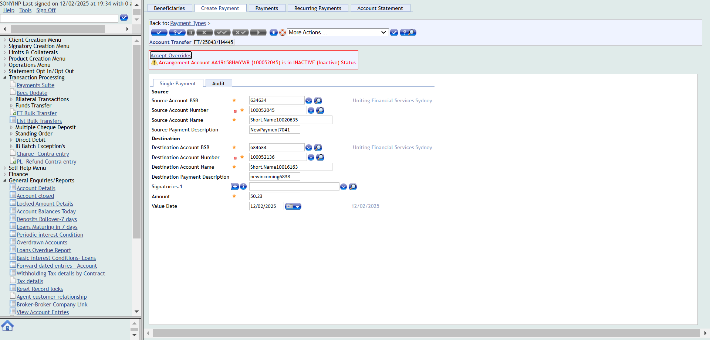And Navigate to account entriesStep skippedThen Enter the account number and click on find buttonStep skippedAnd Verify whether the transaction is reflected in the accountentriesStep skippedFailInternal Transfer narrativeWhen close all the other opened windowsWhen User opens the T24 Url
Then Click on validateAnd Click on commitThen Verify whether the transaction complete message is displayed after commitingcom.frameium.stepdef.Hooks.afterEveryStep(io.cucumber.java.Scenario)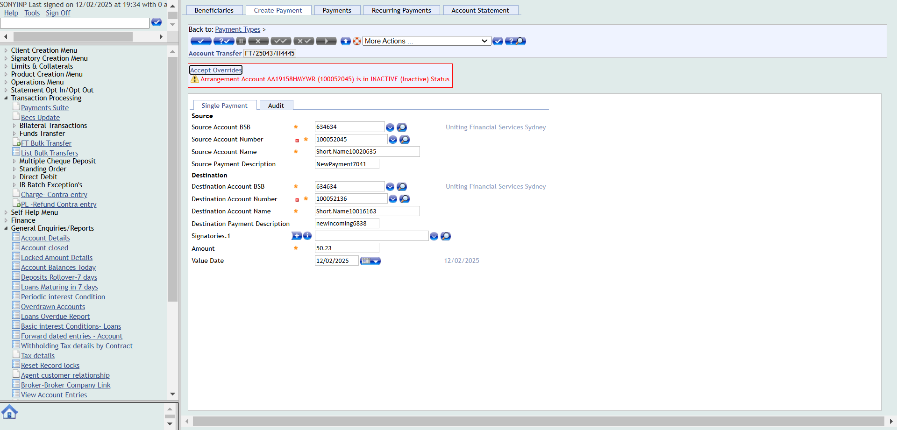And Navigate to account entriesStep skippedThen Enter the account number and click on find buttonStep skippedAnd Verify whether the transaction is reflected in the accountentriesStep skippedFailInternal Transfer narrativeWhen close all the other opened windowsWhen User opens the T24 Url Then User should be able to login to T24
Then User should be able to login to T24


 Then The user should be able to fill the commandlineAnd The user should be able to click on general enquiries buttomAnd click on the IB-view of account entriescom.frameium.stepdef.Hooks.afterEveryStep(io.cucumber.java.Scenario)Then Enter the account numberStep skippedAnd click on find buttonStep skippedAnd The details of internal transfer should be reflected in the narrativesStep skippedFailExternal transferWhen close all the other opened windowsWhen User opens the T24 Url
Then The user should be able to fill the commandlineAnd The user should be able to click on general enquiries buttomAnd click on the IB-view of account entriescom.frameium.stepdef.Hooks.afterEveryStep(io.cucumber.java.Scenario)Then Enter the account numberStep skippedAnd click on find buttonStep skippedAnd The details of internal transfer should be reflected in the narrativesStep skippedFailExternal transferWhen close all the other opened windowsWhen User opens the T24 Url Then User should be able to login to T24
Then User should be able to login to T24
 Then The user should be able to fill the commandlineAnd user should be able to see the the balance of the account before performing External transferThen The user should be able to navigate to Account transfer buttonAnd Enter the details in the account external transfer fields
Then The user should be able to fill the commandlineAnd user should be able to see the the balance of the account before performing External transferThen The user should be able to navigate to Account transfer buttonAnd Enter the details in the account external transfer fields Then Click on validateAnd Click on commitThen Verify whether the transaction complete message is displayed after commitingcom.frameium.stepdef.Hooks.afterEveryStep(io.cucumber.java.Scenario)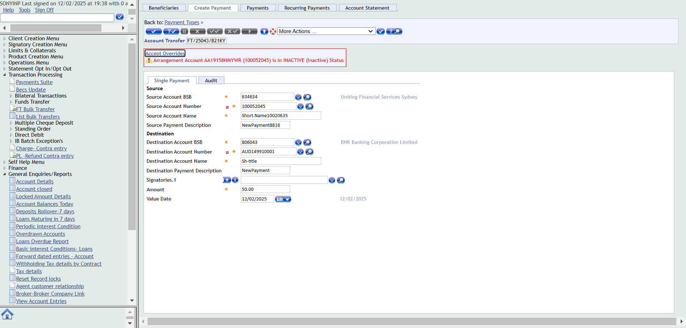And Navigate to account entriesStep skippedThen Enter the account number of external transfer and click on find buttonStep skippedAnd Verify whether the external transaction is reflected in the accountentriesStep skippedFailExternal Transfer narrativeWhen close all the other opened windowsWhen User opens the T24 Url
Then Click on validateAnd Click on commitThen Verify whether the transaction complete message is displayed after commitingcom.frameium.stepdef.Hooks.afterEveryStep(io.cucumber.java.Scenario)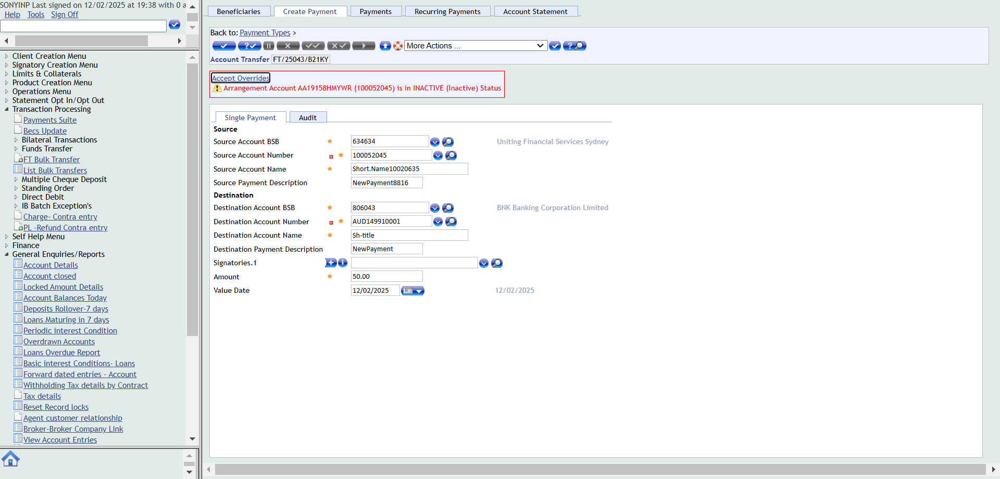And Navigate to account entriesStep skippedThen Enter the account number of external transfer and click on find buttonStep skippedAnd Verify whether the external transaction is reflected in the accountentriesStep skippedFailExternal Transfer narrativeWhen close all the other opened windowsWhen User opens the T24 Url Then User should be able to login to T24
Then User should be able to login to T24

 Then The user should be able to fill the commandlineAnd The user should be able to click on general enquiries buttomAnd click on the IB-view of account entriescom.frameium.stepdef.Hooks.afterEveryStep(io.cucumber.java.Scenario)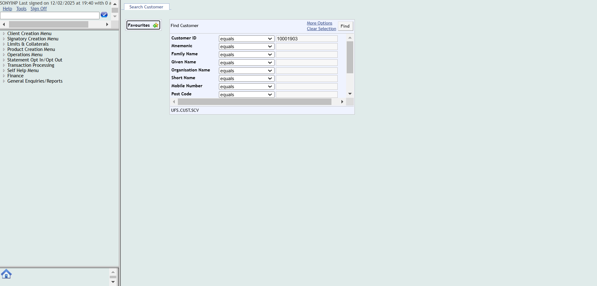Then Enter the external account number in IbView of account entriesStep skippedAnd click on find buttonStep skippedAnd The details of External transfer should be reflected in the narrativesStep skippedFailInternal transfer over limitWhen close all the other opened windowsWhen User opens the T24 Url
Then The user should be able to fill the commandlineAnd The user should be able to click on general enquiries buttomAnd click on the IB-view of account entriescom.frameium.stepdef.Hooks.afterEveryStep(io.cucumber.java.Scenario)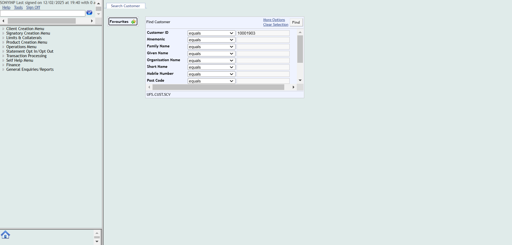Then Enter the external account number in IbView of account entriesStep skippedAnd click on find buttonStep skippedAnd The details of External transfer should be reflected in the narrativesStep skippedFailInternal transfer over limitWhen close all the other opened windowsWhen User opens the T24 Url Then User should be able to login to T24
Then User should be able to login to T24


 Then The user should be able to fill the commandlineAnd user should be able to see the the balance of the account before performing internal transfer over limitThen The user should be able to navigate to Account transfer buttonAnd Enter the details in the account transfer for internal transfer overlimit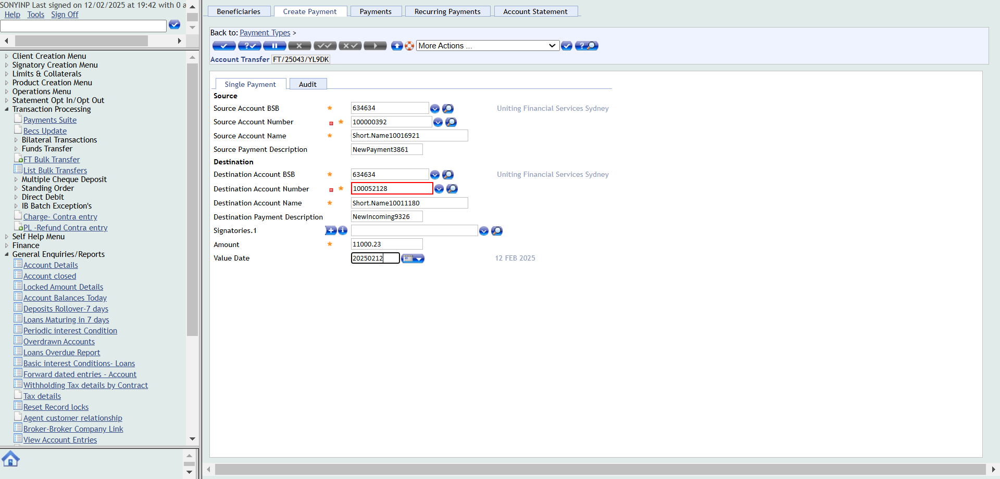Then Click on validateAnd Click on commitThen check whether the override Authorisation Required message is appearing and click on acceptoverride
Then The user should be able to fill the commandlineAnd user should be able to see the the balance of the account before performing internal transfer over limitThen The user should be able to navigate to Account transfer buttonAnd Enter the details in the account transfer for internal transfer overlimit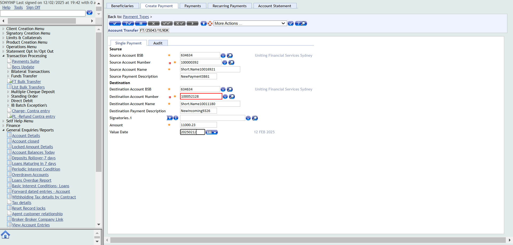Then Click on validateAnd Click on commitThen check whether the override Authorisation Required message is appearing and click on acceptoverride Then Verify whether the transaction complete message is displayed after commiting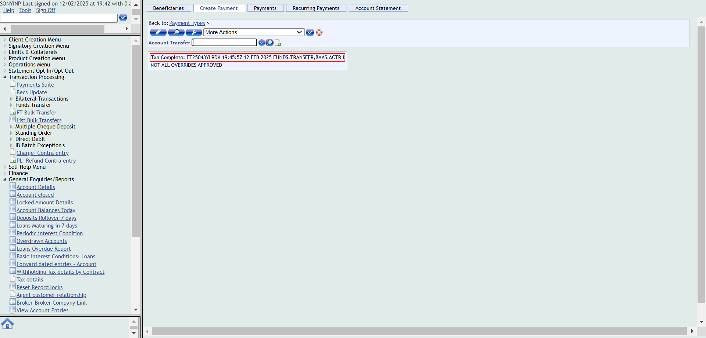And The User clicks on signoffThen Login to authoriser accountThen The user should be able to fill the commandlinecom.frameium.stepdef.Hooks.afterEveryStep(io.cucumber.java.Scenario)
Then Verify whether the transaction complete message is displayed after commiting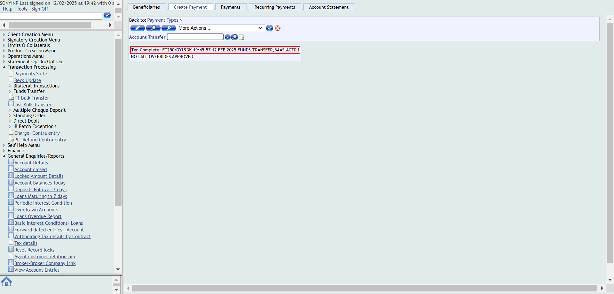And The User clicks on signoffThen Login to authoriser accountThen The user should be able to fill the commandlinecom.frameium.stepdef.Hooks.afterEveryStep(io.cucumber.java.Scenario) And Navigate to unauthorised transactionsStep skippedThen Authorize the transactionStep skippedThen Verify whether the transaction complete message is displayed after commitingStep skippedAnd Navigate to account entriesStep skippedThen Enter the account number of internal transaction overlimit and click on find buttonStep skippedAnd Verify whether the internal transfer over limit transaction is reflected in the accountentriesStep skippedFailInternal Transfer overlimit narrativeWhen close all the other opened windowsWhen User opens the T24 Url
And Navigate to unauthorised transactionsStep skippedThen Authorize the transactionStep skippedThen Verify whether the transaction complete message is displayed after commitingStep skippedAnd Navigate to account entriesStep skippedThen Enter the account number of internal transaction overlimit and click on find buttonStep skippedAnd Verify whether the internal transfer over limit transaction is reflected in the accountentriesStep skippedFailInternal Transfer overlimit narrativeWhen close all the other opened windowsWhen User opens the T24 Url Then User should be able to login to T24
Then User should be able to login to T24
 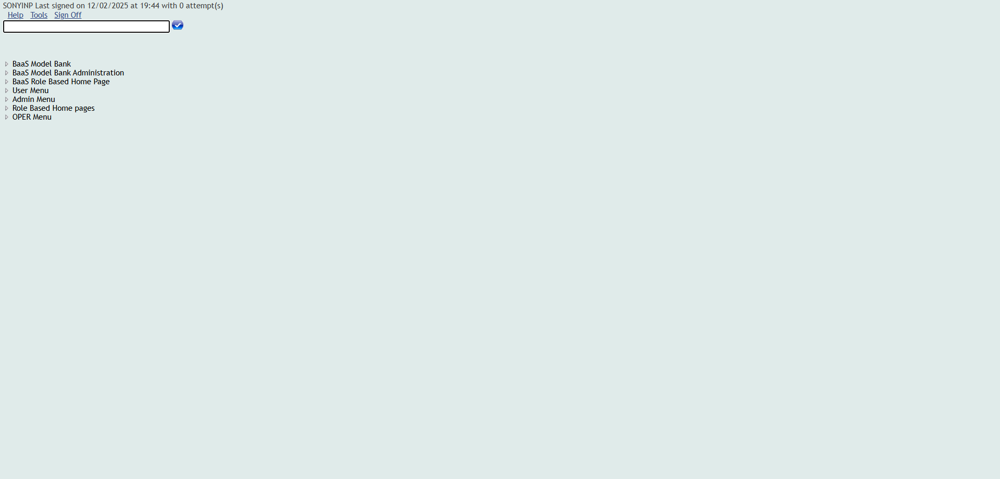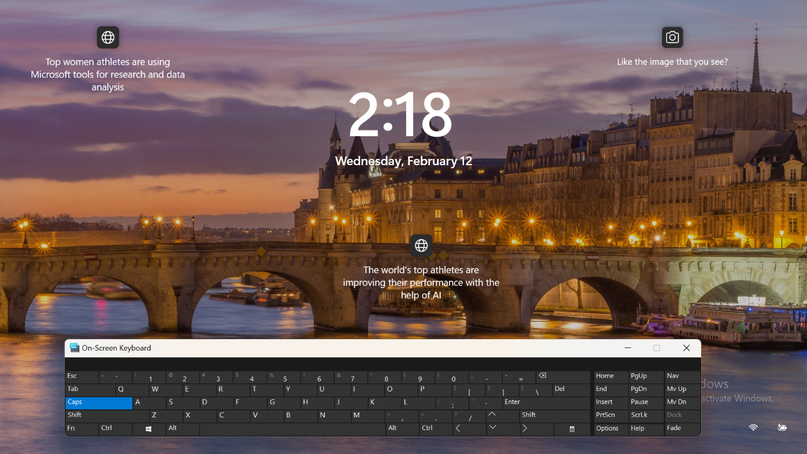Then The user should be able to fill the commandlineAnd The user should be able to click on general enquiries buttomAnd click on the IB-view of account entriescom.frameium.stepdef.Hooks.afterEveryStep(io.cucumber.java.Scenario)
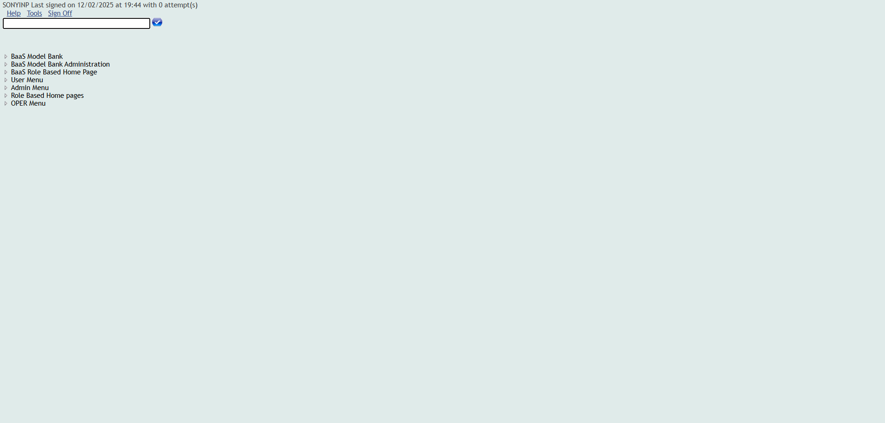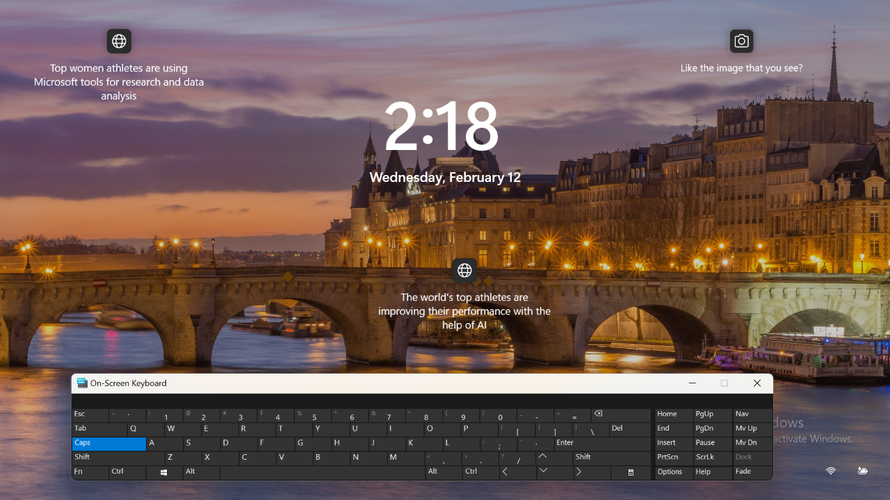Then The user should be able to fill the commandlineAnd The user should be able to click on general enquiries buttomAnd click on the IB-view of account entriescom.frameium.stepdef.Hooks.afterEveryStep(io.cucumber.java.Scenario) Then Enter the account number of internal transfer overlimit in ibview of account entriesStep skippedAnd click on find buttonStep skippedAnd The details of internal transfer overlimit should be reflected in the narrativesStep skippedFailExternal transfer over limitWhen close all the other opened windowsWhen User opens the T24 Url
Then Enter the account number of internal transfer overlimit in ibview of account entriesStep skippedAnd click on find buttonStep skippedAnd The details of internal transfer overlimit should be reflected in the narrativesStep skippedFailExternal transfer over limitWhen close all the other opened windowsWhen User opens the T24 Url Then User should be able to login to T24
Then User should be able to login to T24

 Then The user should be able to fill the commandlineAnd user should be able to see the the balance of the account before performing internal transfer
Then The user should be able to fill the commandlineAnd user should be able to see the the balance of the account before performing internal transfer 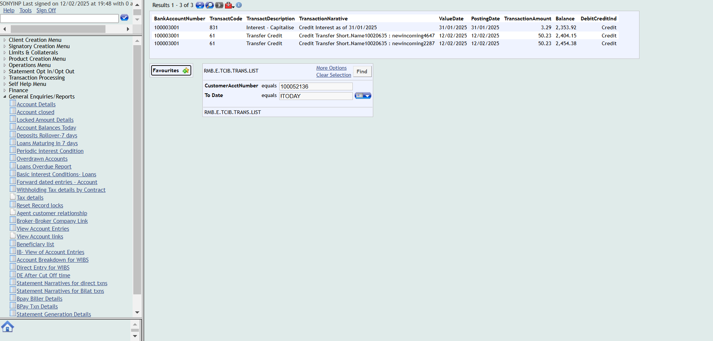Then The user should be able to navigate to Account transfer buttonAnd Enter the details in the account transfer for External transfer overlimit
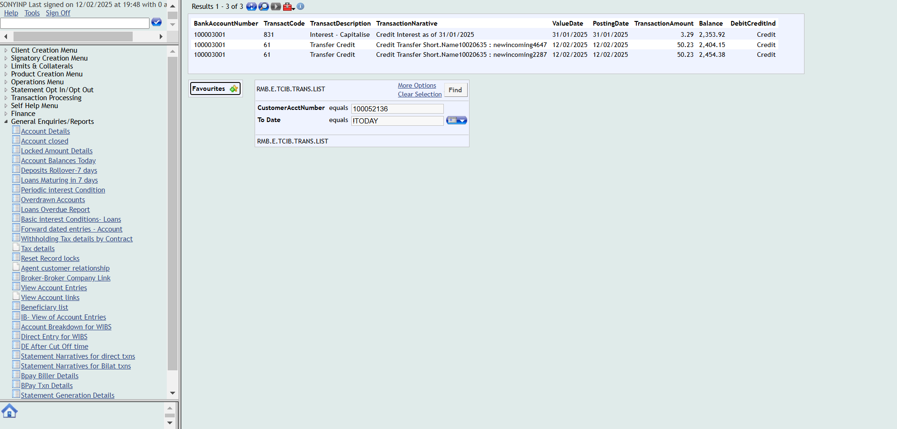Then The user should be able to navigate to Account transfer buttonAnd Enter the details in the account transfer for External transfer overlimit Then Click on validateAnd Click on commitThen check whether the override Authorisation Required message is appearing and click on acceptoverride
Then Click on validateAnd Click on commitThen check whether the override Authorisation Required message is appearing and click on acceptoverride Then Verify whether the transaction complete message is displayed after commitingAnd The User clicks on signoffThen Login to authoriser accountThen The user should be able to fill the commandlinecom.frameium.stepdef.Hooks.afterEveryStep(io.cucumber.java.Scenario)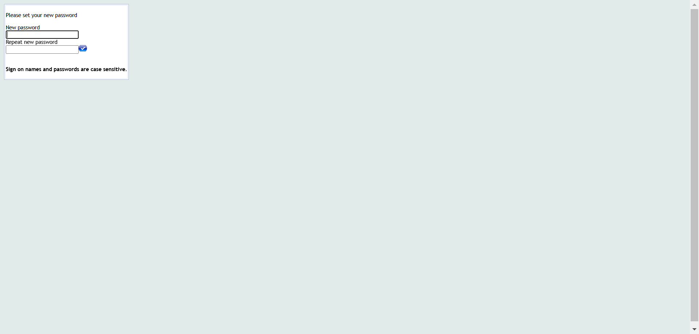And Navigate to unauthorised transactionsStep skippedThen Authorize the transactionStep skippedThen Verify whether the transaction complete message is displayed after commitingStep skippedAnd Navigate to account entriesStep skippedThen Enter the external overlimit account number and click on find buttonStep skippedAnd Verify whether the external overlimit transaction is reflected in the accountentriesStep skippedFailExternal Transfer overlimit narrativeWhen close all the other opened windowsWhen User opens the T24 Url
Then Verify whether the transaction complete message is displayed after commitingAnd The User clicks on signoffThen Login to authoriser accountThen The user should be able to fill the commandlinecom.frameium.stepdef.Hooks.afterEveryStep(io.cucumber.java.Scenario)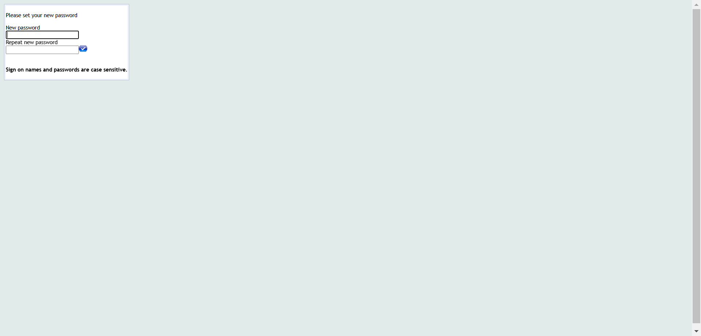And Navigate to unauthorised transactionsStep skippedThen Authorize the transactionStep skippedThen Verify whether the transaction complete message is displayed after commitingStep skippedAnd Navigate to account entriesStep skippedThen Enter the external overlimit account number and click on find buttonStep skippedAnd Verify whether the external overlimit transaction is reflected in the accountentriesStep skippedFailExternal Transfer overlimit narrativeWhen close all the other opened windowsWhen User opens the T24 Url Then User should be able to login to T24
Then User should be able to login to T24

 Then The user should be able to fill the commandlineAnd The user should be able to click on general enquiries buttomAnd click on the IB-view of account entriescom.frameium.stepdef.Hooks.afterEveryStep(io.cucumber.java.Scenario)Then Enter the account number of external transfer overlimitStep skippedAnd click on find buttonStep skippedAnd The details of External transfer overlimit should be reflected in the narrativesStep skippedFailBalance Maintanance sweep transferWhen close all the other opened windowsWhen User opens the T24 Url
Then The user should be able to fill the commandlineAnd The user should be able to click on general enquiries buttomAnd click on the IB-view of account entriescom.frameium.stepdef.Hooks.afterEveryStep(io.cucumber.java.Scenario)Then Enter the account number of external transfer overlimitStep skippedAnd click on find buttonStep skippedAnd The details of External transfer overlimit should be reflected in the narrativesStep skippedFailBalance Maintanance sweep transferWhen close all the other opened windowsWhen User opens the T24 Url Then User should be able to login to T24
Then User should be able to login to T24


 Then The user should be able to fill the commandlineAnd navigate to find account optioncom.frameium.stepdef.Hooks.afterEveryStep(io.cucumber.java.Scenario)
Then The user should be able to fill the commandlineAnd navigate to find account optioncom.frameium.stepdef.Hooks.afterEveryStep(io.cucumber.java.Scenario) Then open the account that balance maintenance sweep transfer need to be appliedStep skippedAnd reverse sweep transfer if any Sweep transfer is there and switch back to main menuStep skippedThen navigate to operations menuStep skippedAnd click on sweep maintainanceStep skippedThen click on setup maintenance sweepStep skippedAnd Enter the details for balance maintenance sweepStep skippedThen Click on validateStep skippedAnd Click on commitStep skippedThen Verify whether the transaction complete message is displayed after commitingStep skippedAnd navigate to find account optionStep skippedThen open the account that balance maintenance sweep transfer need to be appliedStep skippedAnd verify that balance maintenance sweep transfer is reflected in the overview pageStep skipped
Then open the account that balance maintenance sweep transfer need to be appliedStep skippedAnd reverse sweep transfer if any Sweep transfer is there and switch back to main menuStep skippedThen navigate to operations menuStep skippedAnd click on sweep maintainanceStep skippedThen click on setup maintenance sweepStep skippedAnd Enter the details for balance maintenance sweepStep skippedThen Click on validateStep skippedAnd Click on commitStep skippedThen Verify whether the transaction complete message is displayed after commitingStep skippedAnd navigate to find account optionStep skippedThen open the account that balance maintenance sweep transfer need to be appliedStep skippedAnd verify that balance maintenance sweep transfer is reflected in the overview pageStep skipped
-
java.lang.RuntimeException
1 tests
java.lang.RuntimeException
1 failedStatus Timestamp TestName Fail 14:02:42 PM Then The user should be able to fill the commandline Lending operations.Loan Creation.Then The user should be able to fill the commandlineFail 14:16:56 PM Then The user should be able to fill the commandline Payment.Internal transfer over limit.Then The user should be able to fill the commandlineFail 14:22:42 PM Then The user should be able to fill the commandline Payment.External transfer over limit.Then The user should be able to fill the commandline -
org.openqa.selenium.JavascriptException
1 tests
org.openqa.selenium.JavascriptException
1 failedStatus Timestamp TestName Fail 14:07:27 PM Then Verify whether the transaction complete message is displayed after commiting Payment.Internal transfer.Then Verify whether the transaction complete message is displayed after commitingFail 14:11:42 PM Then Verify whether the transaction complete message is displayed after commiting Payment.External transfer.Then Verify whether the transaction complete message is displayed after commiting -
java.lang.NullPointerException
1 tests
java.lang.NullPointerException
1 failedStatus Timestamp TestName Fail 13:57:33 PM And verify simulation status becomes Completed - Successfully Deposit.Deposit partial withdrawal.And verify simulation status becomes Completed - SuccessfullyFail 14:04:24 PM And user should be able to navigate to find loan Lending operations.Loan Closure.And user should be able to navigate to find loanFail 14:08:51 PM And click on the IB-view of account entries Payment.Internal Transfer narrative.And click on the IB-view of account entriesFail 14:13:00 PM And click on the IB-view of account entries Payment.External Transfer narrative.And click on the IB-view of account entriesFail 14:18:39 PM And click on the IB-view of account entries Payment.Internal Transfer overlimit narrative.And click on the IB-view of account entriesFail 14:24:33 PM And click on the IB-view of account entries Payment.External Transfer overlimit narrative.And click on the IB-view of account entriesFail 14:25:52 PM And navigate to find account option Payment.Balance Maintanance sweep transfer.And navigate to find account option
-
@firstday1
12 tests
@firstday1
12 failedStatus Timestamp TestName Fail 13:56:28 PM Deposit partial withdrawal Deposit.Deposit partial withdrawalFail 13:58:36 PM Loan Creation Lending operations.Loan CreationFail 14:03:46 PM Loan Closure Lending operations.Loan ClosureFail 14:05:05 PM Internal transfer Payment.Internal transferFail 14:08:04 PM Internal Transfer narrative Payment.Internal Transfer narrativeFail 14:09:28 PM External transfer Payment.External transferFail 14:12:20 PM External Transfer narrative Payment.External Transfer narrativeFail 14:13:35 PM Internal transfer over limit Payment.Internal transfer over limitFail 14:17:58 PM Internal Transfer overlimit narrative Payment.Internal Transfer overlimit narrativeFail 14:19:17 PM External transfer over limit Payment.External transfer over limitFail 14:23:50 PM External Transfer overlimit narrative Payment.External Transfer overlimit narrativeFail 14:25:12 PM Balance Maintanance sweep transfer Payment.Balance Maintanance sweep transfer
Started
Feb 12, 2025 01:56:23 PM
Ended
Feb 12, 2025 02:26:36 PM
Features Passed
0
Features Failed
3
Features
Scenarios
Steps
Timeline
Tags
| Name | Passed | Failed | Skipped | Others | Passed % |
|---|---|---|---|---|---|
| @firstday1 | 0 | 12 | 0 | 0 | 0% |